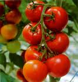
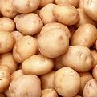
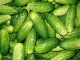
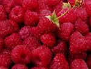

ИЗДАНИЕ 56

ТРИ ТОННЫ ПОМИДОР С ОДНОЙ СОТКИ
Да, это реально, такой урожай может получить любой огородник в условиях открытого грунта. Первые спелые плоды можно получить к 20-25 июня! Подготовка семян начинается в конце января. Сначала семена надо прогреть при температуре 55-60 град., затем поместить в 3% раствор поваренной соли, хорошо перемешать. Для высева используют только те семена, которые осели на дно, их надо промыть проточной водой, после чего поместить в 1% раствор марганцовокислого калия на 20 мин. Снова промыть и подсушить при комнатной температуре 1 час. Потом семена замачиваются в растворе микроудобрений - четверть таблетки на 2.5 л воды или в вытяжке из золы на 12 часов. Далее семена закаливают - завернутые в марлю влажные семена попеременно (по 12ч.) держат при комнатной температуре и при температуре минус 1-2 градуса. Закалка проводится в течении 12 дней. Семена высеиваются в ящики в первой половине февраля. Почвенную смесь надо приготовить еще летом. Она состоит из дерновой земли, навозного перегноя и низменного торфа - по ведру каждого компонента. Смесь заправляется удобрениями: нитроаммофоса
- 100 гр., двойного суперфосфата - 200 гр., калимагнезии
- 100 гр. и золы от сжигания ботвы помидор 1,5л.
Питатель
ными веществами смесь насыщают осенью, перед промо
раживанием. Оттаявшую смесь насыпать в ящики слоем 6-
8 см и в неглубокие лунки разложить семена, присыпать
почвой, увлажнить и накрыть пленкой. Ящики поставить в
теплое место с постоянной температурой 25-28 град. Всхо
ды появляются через 3 дня, в первые 2-2,5 недели рассаду
надо подсвечивать ежедневно по 12-14 часов (200 вт на 1
кв. м), причем, при появлении массовых всходов темпера
туру снизить до 14-15 град, в течении недели для того, что
бы сеянцы окрепли и лучше развивались с корневой систе
мой. Потом температуру можно повышать в зависимости от
степени освещаем ости. Поливать не более 2 раз в неделю.
После того, как образуется второй настоящий лист, сеянцы
надо распикировать в ящики глубиной 12 см по схеме 5x5
см, заглубляя их до семядольных листочков. Для лучшей
приживаемости сразу после пикировки снизить освещение,
дать только на 3 сутки. Избегать прямых солнечных лучей.
После того, как сеянцы окончательно приживутся, надо дать
максимальное освещение. Продолжительность освещения
довести до 14ч. в сутки при помощи дополнительной под
светки. Если в конце марта погодные условия не позволяют
перенести рассаду в парники, надо произвести замедление
роста - снизить температуру до 10-12 град., сократить по
лив, уменьшить освещение и постепенно снизить темпера
туру до 8 град.
Затормозить рост растений можно и пикировкой. Каждая пикировка задерживает рост растений на неделю и к тому же растения приобретают устойчивость к неблагоприятным условиям. Для выведения растений из состояния консервации надо постепенно в течении 3 дней повысить температуру и освещенность, а через 6 дней дать подкормку. Раствор для подкормки: 30 гр. аммиачной селитры, 20 гр. суперфосфата, 15 гр. сернокислого калия на 10 л воды. Еще влить 100 мл водной вытяжки золы (1 стакан на 1 л воды). Вытяжку золы приготовить за сутки до подкормки. Норма расхода - 1 ведро на 1 кв. м ящиков. Чтобы вырастить коренастую, невытянутую рассаду, надо регулировать соотношение кол-ва удобрений в почвенной смеси. Так, при приготовлении смеси перед пикировкой надо добавить дополнительно столько суперфосфата и золы, сколько было внесено в 1 раз, кол-во же азота осталось на прежнем уровне, граничащем с недостатком. Это и является фактором формирования коренастой рассады. Если по окраске листочков будет заметна нехватка азота, то азот дать в виде внекорневой подкормки - 20 гр. аммиачной селитры на 10 л воды из расчета 2 л раствора на 1 кв. м площади ящика.
В конце марта, в фазе 4-х настоящих листочков, рассаду надо 2 раза пикировать, но уже в парник. Проводить ее надо в тихий день, при температуре воздуха не ниже 8 град. Температура грунта в парнике к этому времени должна быть 15-18 град. Парник с осени набивают сухими листьями для меньшего промерзания. Теперь их надо вынуть, продезинфицировать 5% раствором формалина и набить горячим навозом. После разгорания и оседания навоза, посыпать слоем земли 3 мм и заполнить слоем почвенной смеси толщиной 15-18 см. В него и высадить рассаду по схеме 10x10 см. Когда рассада в парнике хорошо приживется, надо опрыскать 0,1% раствором борной кислоты, а через день провести подкормку: в 12 литровое ведро налить 10 л настоя помета, 100 гр. вытяжки из золы, 2,5 гр. марганцовокислого калия, 1,5 гр. борной кислоты. Перед подкормкой растения полить: 5 л на 1 кв. м с температурой 18 град. Подкормку проводить по междурядьям из расчета 100 мл раствора на каждое растение. До высаживания в грунт надо регулировать температуру влажности почвы. В холодный период температура воздуха может понизиться. В этом случае парник надо надежно укрепить крафт-бумагой, матами.
В открытый грунт рассаду высадить к концу апреля, когда на первой кисти образуются бутоны. Если погода не позволяет, надо переждать, но утром опрыснуть раствором борной кислоты (10 гр. на 10 л воды), чтобы предотвратить опадание бутонов. Почву перед высадкой подготовить заранее: разрыхлить с помощью железных граблей, накрыть темной пленкой. Это спровоцирует рост сорняков, как только они тронутся в рост, их легко уничтожить повторным боронованием. Накануне этой операции надо дополнительно внести минеральные удобрения: нитроаммофоса - 30 гр., сульфата аммония - 20 гр., калимагнезии - 20 гр., сернокислого калия - 20 гр. на 1 кв. м. Участок перекопать без оборота на глубину 30 см.
Схема посадки Белого налива: между рядками, расположенными с юга на север - 35 см, а в рядке между лунок - 30 см. На каждой грядке 4 рядка, ширина прохода - 50 см. На 1 сотке (10 кв. м) размещается 1000растений. Копаются лунки глубиной 30 см. В каждую лунку высыпать 0,5 л удобрительной смеси, состоящей из 1 ведра просеянного перегноя, 0,5 л золы от сжигания ботвы помидор и картофеля, 0,5 ст. двойного суперфосфата, 0,5 ст. нитроаммофоса, 30-40 гр. калиймагнезии. Смесь приготовить заранее, тщательно перемешать. Кроме удобрительной смеси, влить 0,5 л куриного помета и 2 л воды. Когда вода впитается, смешать почву с удобрениями. В тестообразную массу высадить рассаду с большим комом земли. Заглублять по семядольные листочки. Через час полить - 1 л воды на растение. Когда грядка из 4 рядков посажена, поставьте дуги из толстой проволоки (8-10 мм) через 80 см друг от друга. Дуги скрепить шнуром в 4 ряда (над каждым рядом). На случай непогоды приготовить двойной слой полиэтиленовой пленки с прокладкой между ними крафт-бумаги (3 слоя).
Посадку рассады на постоянное место надо проводить в пасмурную погоду. Если погода солнечная, то рано утром и вечером. Как только растения приживутся на новом месте, вначале цветения надо еще раз опрыснуть 0,1% раствором борной кислоты. Если в фазе цветения пойдут затяжные дожди, то лучше грядки с дугами покрыть пленкой. Все растения надо формировать в один стебель с 3 соцветиями. Удалять ненужные пасынки до тех пор, пока не сформируется урожай на последнем соцветии, после чего произвести чеканку - отрезать верхушку. За 20-30 дней до созревания последних плодов провести корневую подкормку через мульчирующие слои: на 1 ведро перегноя добавить 0,5 л золы и 1 ст. двойного суперфосфата. Преобладание в почве фосфора и калия над азотом ускоряет созревание плодов. Одновременно с удалением пасынков надо проводить подвязку лентами к дугам и шнуру, которым дуги связаны между собой. Этот способ исключает подвязку к колышкам, снижает нагрузку на растения. Растения, плодоносящие в июне и июле почти всегда уходят от фитофторы. В порядке профилактики можно опрыскивать растения настоем чеснока: 200 гр. толченых зубчиков чеснока настоять в ведре воды, плотно закрыв его. Опрыскивать через 10-15 дней, начиная с последних чисел июля.
Отметим высокоурожайный сорт Де-Барао, по форме напоминает куриное яйцо. Снятые осенью, могут храниться до января! Очень высокий урожай, холодоетойкость, слабая поражаемость болезнями. Выращивание этого сорта имеет свои особенности. Он требует более питательной почвенной смеси для рассады и для внесения в лунки. Смесь для рассады состоит из 2 частей перегноя конского навоза и 0,5 ст. двойного суперфосфата на 1 ведро смеси. Почвенную смесь готовить еще в сентябре, чтобы зимой она успела хорошо промерзнуть. В конце января смесь оттаивается, вначале февраля обработка и закалка семян, затем проводится посев. Первую пикировку в стадии 2-х настоящих листочков проводить в квартире, 2 - в парнике, в первых числах апреля - в фазе 3-4 настоящих листочков. Со 2 по 10 мая рассаду высадить в открытый грунт. Посадочные ямы объемом 10 л. В каждую насыпать 3 л питательной смеси (на ведро перегноя - 0,5 л древесной золы. 0,5 ст. суперфосфата, 0,5 ст. нитроаммофоса. 50 гр. калимагнезии), вылить по 1 л водного настоя куриного помета (1:10), а как впитается - по 3 л воды. Перемешать смесь с равным количеством почвы и высадить рассаду, заглубляя ее по семядольные листочки. Через час после посадки полить 1,5-2 л воды на растение, замульчировать перегноем, это избавит вас от необходимости рыхлить почву. В течении всей вегетации подкормок не требуется - у растений большой запас корневой пищи. Для ускорения созревания плодов можно к перегною при последнем мульчировании добавить на 10 л по 0,5л золы и по 1 ст. двойного суперфосфата. Растения формируют в 3 стебля и размещают в шахматном порядке с расстоянием 70 см. Предельная высота растений после прищипки -2м.

ПОЛТОРЫ ТОННЫ КАРТОФЕЛЯ С СОТКИ
Заботиться об урожае нужно с осени - отобрать полноценные 100-150-граммовые клубни и озеленить (подержать на свету) в течении 2-х недель. Сорта "Ранняя роза" и "Гатчинский". При озеленении клубни изредка переворачивают. Почву также надо готовить с осени, вначале глубоко взрыхлить железными граблями, удаляя при этом все растительные остатки и сорняки. Затем внести органические и минеральные удобрения: 1 кв. м перегноя - 0,5 кг, хлористого калия - 30 гр., двойного суперфосфата - 50 гр. и перекопать. В марте надо готовить клубни к посадке. Перед проращиванием, пока почки не тронулись в рост, необходимо на каждом клубне сделать поперечный кольцевой надрез тонким ножом на глубину 1-1.5 см. Кусты при этом вырастают более мощными, урожай повышается на 10-15%. Проращивать клубни надо с 10 марта в плоских, неглубоких ящиках, с насыпанными на дно опилками при температуре 10-20 градусов. Клубни раскладываются верхушками вверх и до начала прорастания укрываются от света.
После притенения снимают и освещают по 10-12 часов в сутки, с 10 по 25 апреля проращивание продолжать уже во влажной среде. На дно ящиков насыпается смесь перегноя и опилок в соотношении 2:1. Толщина слоя 3 см. Смесь и клубни периодически опрыскиваются водой, а на 5 и на 10 день раствором удобрения: 60 гр. суперфосфата, 50 гр. аммиачной селитры, 0,5 л водной вытяжки золы на 10 л воды.
Водная вытяжка золы готовится так: литровая банка золы заливается 2-мя л теплой воды на сутки. Во время влажного проращивания прорастают толстые, крепкие ростки, клубни дают корешки, которые нужно присыпать смесью перегноя с опилками. Полезно закаливать клубни при открытых окнах.
Одновременно нужно позаботиться об участке - во второй половине апреля, в солнечные дни застелите его темной пленкой, чтобы почва поскорее прогрелась. Перед посадкой в почву дополнительно внесите на 1 кв. м 50 гр. двойного суперфосфата, полстакана нитроаммофоски, полстакана калимагнезии. Смесь должна быть тщательно перемешана. В каждую лунку насыпается полулитровая банка смеси и перемешивается с почвой.
Пророщенные клубни высаживаются на глубину 6-8 см. Если после посадки наступает похолодание, участок покрыть темной, а затем прозрачной пленкой. Если появились всходы, но ожидаются заморозки - лучше их присыпать почвой. При достижении всходами высоты 7-10 см на ночь опрыскать 0,02% раствором марганцовокислого калия (2 гр. на 10 л воды). Полезно за период роста сделать 2 внекорневых подкормки. Первую вначале бутонизации - 3% раствором аммиачной селитры и добавкой микроэлементов. Вторую делают для ускорения созревания клубней - 5% вытяжкой суперфосфата и калимагнезии (фосфата - 3, калия и магния - 2).
Хорошо совместить внекорневую подкормку с профилактикой фитофтороза - добавить в питательный раствор 1%-й раствор бордосской жидкости.

ВЫСОКИЙ УРОЖАЙ ОГУРЦОВ
Перед вами метод выращивания огурцов в среднем по 20-25 штук с каждого куста. Этот урожай будет в 6 раз выше обычного! Из опробованных сортов лучшими оказались: "Нежинский", "Конкурент", но суперурожай дал сорт "Майский".
Семена высеять в ящик, на дно насыпать песку - для фильтрации, сверху добавить почву (50% земли и 50% перегноя). Наполнить ящики до половины их высоты на 3-4 см. высаживая семена через 3-4 см на глубину 1-2 см. Ящики накрыть стеклом и на 3-4 дня поставить в теплое место. Семена не проращивать-они взойдут желтыми и хилыми. При появлении всходов снять стекло и выставить ящички на солнечное окно. По мере роста рассады подсыпать почву, пока ящики не заполнятся полностью. Это будет первое УВЕЛИЧЕНИЕ корневой системы путем подсыпки земли. Присмотритесь внимательно к стволику огурцов - на нем увидите много пупырышек, это будущие корешки. Они прорастут при подсыпке земли и дадут дополнительные корни, увеличив систему всего растения почти в 2 раза, а значит и мощь всего растения!
Теперь пересадите рассады в горшочки или пакеты из-под молока. Это делается, когда на растениях отрастает 1-2 листочка. Отрежьте растение вместе с землей и вложите в пакет (горшочек). Горшочки, как и ящики, заполняются землей лишь частично. По мере роста растений земля подсыпается, пока не заполняются полностью пакеты или горшки. Это второе УВЕЛИЧЕНИЕ корневой системы. Затем пересаживаем рассаду в грунт, под пленку, в загородку.
Внутри загородки выкопать траншею с обеих сторон на полный штык лопаты. На дно траншеи насыпьте перегной 5-7 см. До высадки рассады земля должна неделю прогреться под пленкой. Высадка рассады: разрезается пакет и ком земли с рассадой опускается на дно траншеи (на перегной). Этот ком буквально пронизан корнями - это главное в этом методе, где четырежды увеличивается корневая система (2 раза в ящике и 2 раза в пакете). Когда растение опущено в траншею, обсыпьте его землей, смешанной с суперфосфатом (30-40 гр. на растение). После этого траншею обсыпьте соломой, прошлогодним сорняком слоем 8-10 см, сверху присыпьте землей и полейте. Этот слой соломы даст тепло и пищу растениям в период гниения и выделит углекислоту. Это будет третье
УВЕЛИЧЕНИЕ корневой системы (по вертикали). Огурцы обязательно надо подвязывать, для этого сделайте высокую поперечную шпалеру. Они меньше поражаются мучнистой росой, не так желтеют.
Преимущества метода: высокая урожайность 110-120 огурцов с 1 кв. метра, долгий вегетационный период - 165 дней, против 95. При поливе очень небольшой расход воды. В загородке из пленки и в траншее долго держится влага, малый расход мульчирующего материала, потому что узкую траншею проще предохранять от испарения. Малая посадочная площадь - 18-20 растений на 4 кв. метрах!

ТРОЙНОЙ УРОЖАЙ МАЛИНЫ
Если нет урожая - с досады машешь рукой и вырезаешь злосчастные кустики (осенью). Зато на следующий год уцелевшие побеги дадут суперурожай ягод! В кустах малины есть побеги только двух возрастов: текущего года и прошлогодние. Малинник разделите на две равные части, отстоящие одна от другой не менее чем на 2 метра. На одной части плантации будете выращивать только плодоносящие побеги, а отпрыски (побеги замещения) пересадите на другой участок.
Посадка малины может быть гнездовой или рядовой. Предпочтителен последний способ, т. к. растения обретают лучшие условия питания и освещения. Но в обоих случаях число растений на погонном метре не должно превышать десятка. Подвязка плодоносящих растений имеет исключительное значение! Кроме двусторонней подвязки, можно укреплять побеги к третьей проволоке, натянутой повыше, непосредственно между кольев. Это делается, если в ряду оставлено на 1 м не 10, а 12-13 побегов. Почки у избыточных на каждом метре двух-трех побегов, подвязанных к средней проволоке, снизу отшмыгиваем (удаляем). Этим приемом предотвратим загущение нижней части ряда и усилим ветвление верхней части побегов, где имеются лучшие условия для развития. Пусть вас не смущает, что верхушки побегов повиснут за проволокой на 30-40 см. Так и нужно -в почву плодового ряда не должны проникать солнечные лучи. Тень еще важна и как средство угнетения сорняков. Но чтобы вовсе не допускать роста сорняков, надо 2-3 раза в сезон между побегами оборачивать почву тонким пластом (не более 3 см). От этого почва постоянно будет рыхлой, умеренно влажной и насыщена ценной для растений углекислотой. Только на рыхлой почве пробуждаются все так называемые "запасные почки" растений. Борьбу с вредителями и болезнями ведем в обычные сроки и принятыми химикатами. Подкармливать малину навозной жижей или органо-минеральным раствором. После созревания ягод плодоносящие побеги заканчивают свой жизненный цикл и усыхают. Вырежьте их. На свободной от растений, хорошо освещенной плантации все питательные вещества почвы направляются в побеги замещения. А замещающие побеги-отпрыски, выращенные на другой части малинника, стоят уже полные жизненной силы, готовые дать урожай в будущем году.
Преимущества вновь созданного способа.
Известный способ имеет недостаток, что побеги замещения, угнетаемые плодоносящими побегами, не достигают должной мощности и не способны в будущем году дать много ягод. А плодоносящие побеги крайне стесненные корневыми отпрысками - последние отнимают у них значительную часть питательных веществ и чересчур затеняют - не в состоянии дать высокий урожай хорошего качества.
Освобожденные от активных молодых конкурентов, плодоносящие побеги превращаются в длинные веточки с крупными ягодами. Причем нижние почки, обычно затененные и непродуктивные, здесь образуют плодовые веточки метровой длины с большим количеством ягод. В средней и верхней части побега из почек появляются не по 1, как обычно, а по несколько плодоносящих веточек, т. е. пробуждаются все в обычной ситуации "спящие" веточки.
Новый способ возделывания малины дает высокую урожайность, почти трехкратную, независимо от сорта малины. Резко повышается производительность труда сборщиков: ягода крупноплодная и нет путающихся под ногами побегов замещения. Просветленная и хорошо проветриваемая малина становится устойчивой против болезней и вредителей, за ней удобно ухаживать, она имеет красивый вид.
По краям малинника вбейте колья высотой 130-140 см. К ним на уровне 90 см от земли прикрепите перекладины длиной 120-150 см. Натянутая между перекладинами проволока будет служить опорой для неустойчивых стеблей растений. Их подвяжите проволокой, но не ближе 20 см друг от друга, и елочкой: один побег к левой, другой к правой проволоке. Чтобы не провисла, подоприте ее одной-двумя рогатками.
Уникальные издания.